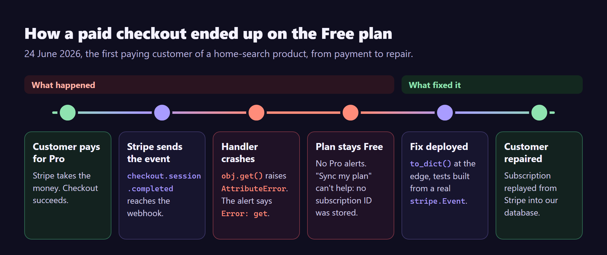
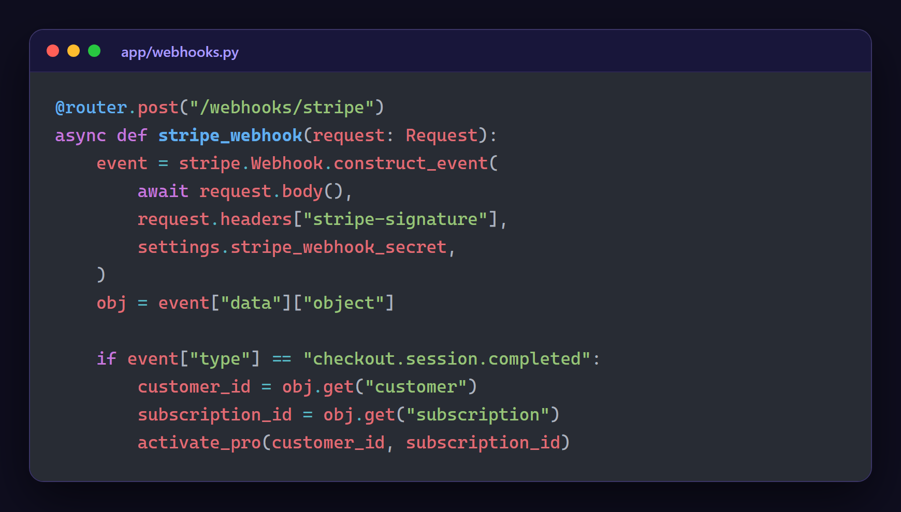
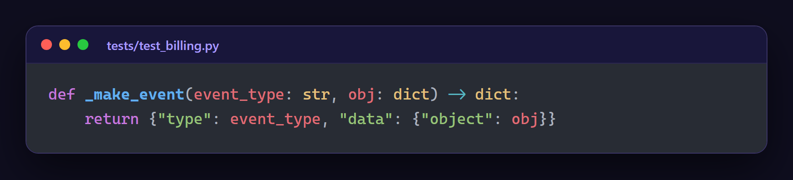
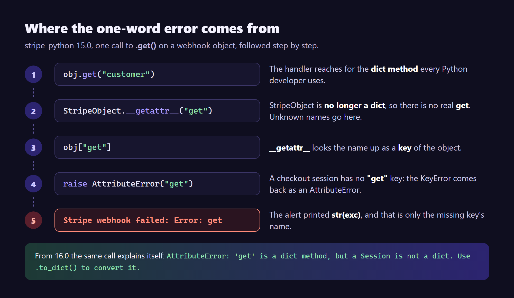
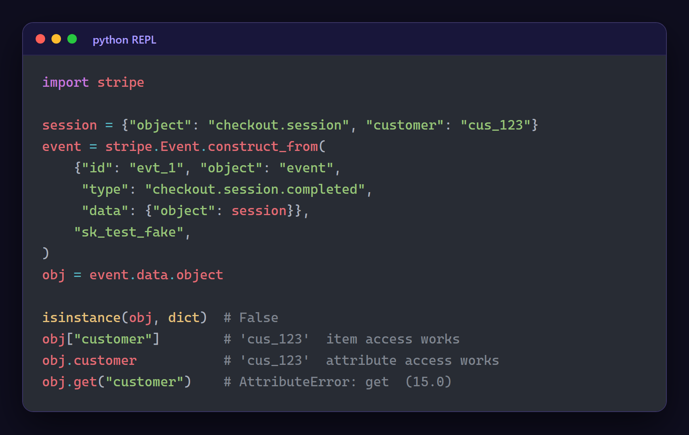
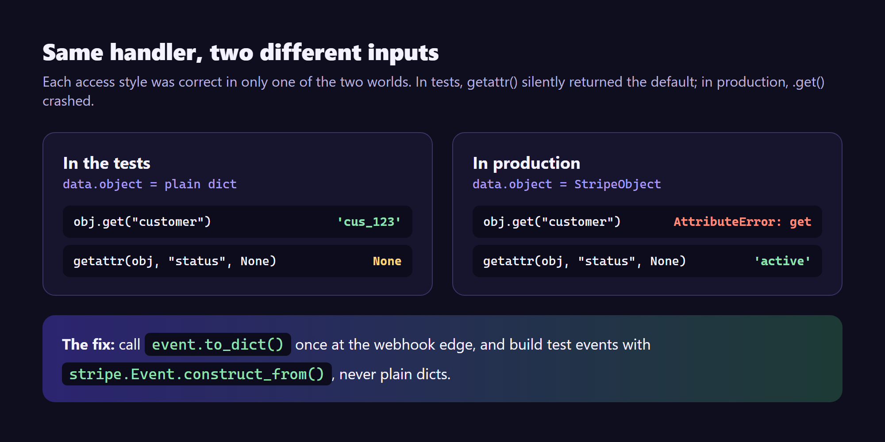
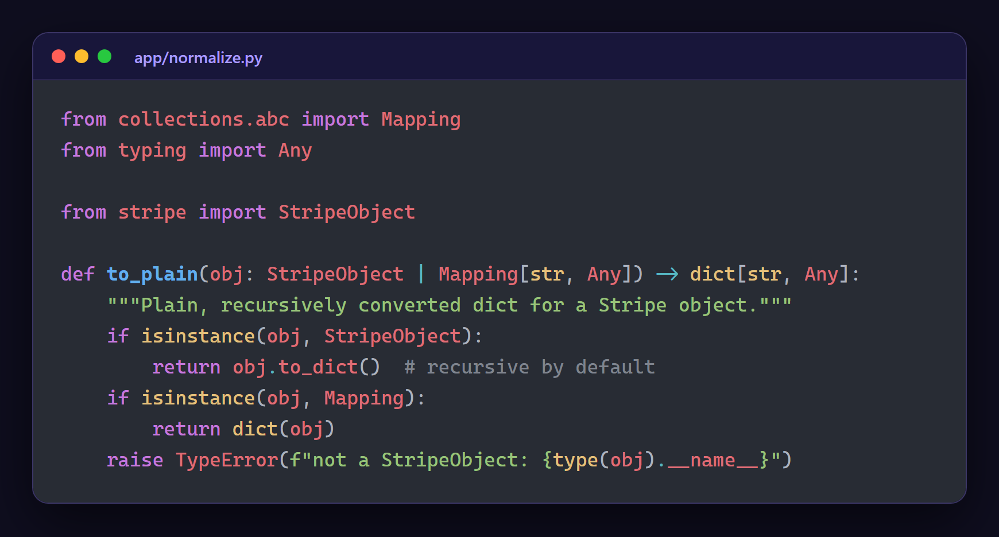
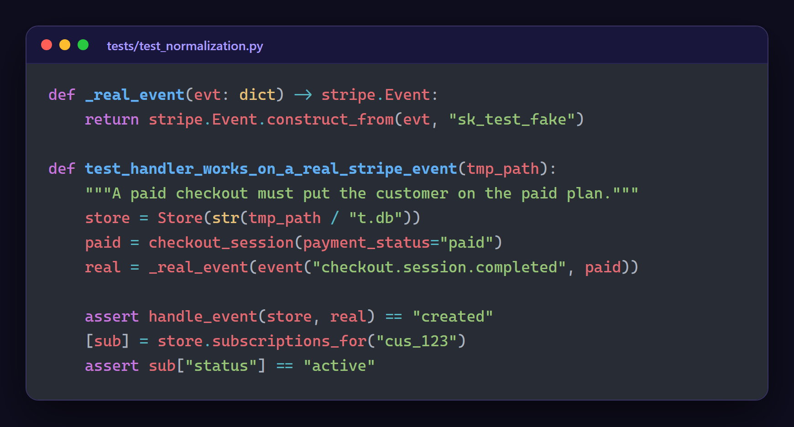
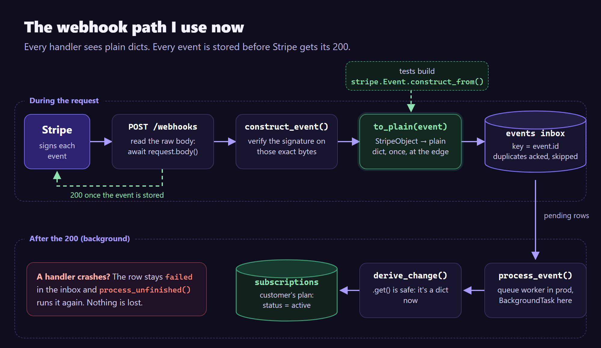

The tests passed. Production crashed. The error said one word.
Luis Eduardo G. Espindola · full-stack developer, Belgium
No stack trace, no field name. Just get.



Plain dicts have .get(). Production doesn't hand you a plain dict.
dict subclass: obj.get("status") works
15.0.0not a dict: obj.get("status") raises AttributeError: get
16.0 / 17.1still not a dict, but the error explains itself:

getattr on a dict


The failed webhook never stored their subscription ID, and "sync my plan" needed exactly that ID.
I replayed their state from Stripe by hand.
Check that your recovery path doesn't depend on data the failed webhook was supposed to write.
to_dict() onceconstruct_fromevent.idstr(exc)
Every Stripe test I write now starts from a real stripe.Event.
github.com/LuisEduardoGE/fastapi-stripe-webhooks
25 tests, no Stripe keys needed
Luis Eduardo G. Espindola
dev.to/luiseduardoge · luiseduardoge.hashnode.dev · linkedin.com/in/luisgespindola